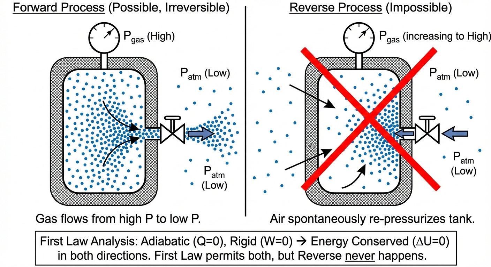
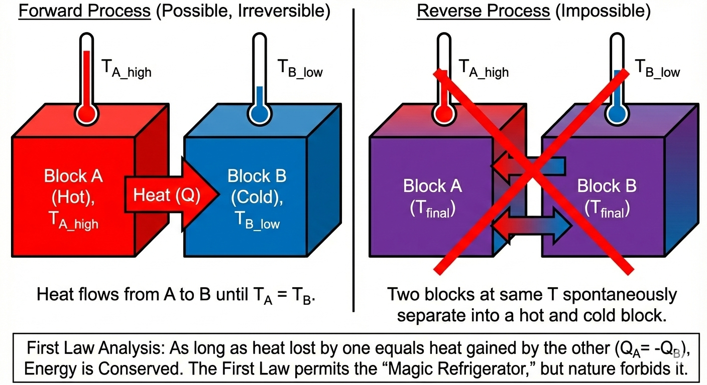
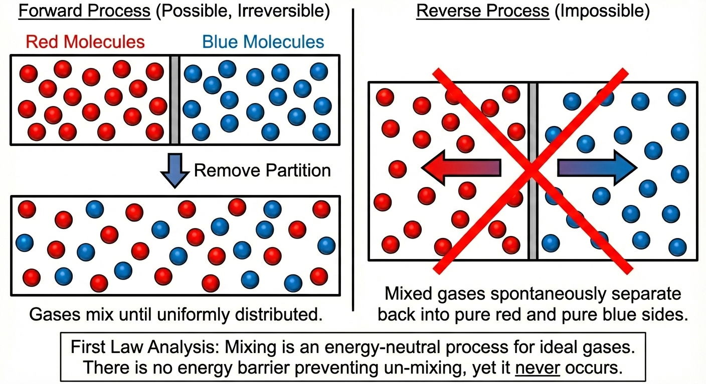

Lecture 12: Introduction to Entropy and the Second Law
CBE 20260 / Thermodynamics I
1 The Arrow of Time
In the previous lecture, we established that the First Law of Thermodynamics is a conservation law. It tells us that energy cannot be created or destroyed, only transformed. However, the First Law fails to explain a fundamental aspect of nature: Directionality.
Processes in nature occur spontaneously in one direction but never in the reverse, even though the reverse process would satisfy the First Law. Let’s look at three specific examples.
1.1 Case 1: The Gas Expansion
Imagine a rigid, insulated tank containing high-pressure gas (\(P_{gas} > P_{atm}\)). We open a valve, and the gas rushes out into the atmosphere. However, we never see the reverse process: air from the room spontaneously rushing back into the tank, re-pressurizing it.

Forward Process: Gas flows from high pressure to low pressure.
Reverse Process: Air from the room spontaneously rushes back into the tank, re-pressurizing it.
First Law Analysis: If the tank is adiabatic (\(Q=0\)) and rigid, energy is conserved in both directions. The First Law does not forbid the air from rushing back in, yet we never see it happen.
1.2 Case 2: Thermal Equilibrium
Consider two blocks, Block A (Hot) and Block B (Cold), brought into contact.

Forward Process: Heat flows from A to B until \(T_A = T_B\).
Reverse Process: Two blocks at the same temperature spontaneously separate into a hot block and a cold block.
First Law Analysis: As long as the heat lost by one equals the heat gained by the other (\(Q_{hot} = -Q_{cold}\)), energy is conserved. The First Law permits the “Magic Refrigerator,” but nature forbids it.
1.3 Case 3: Mixing
Consider a box separated by a partition. On the left are red molecules; on the right are blue molecules. We remove the partition.

Forward Process: The gases mix until they are uniformly distributed.
Reverse Process: The mixed gases spontaneously separate back into pure red and pure blue sides.
First Law Analysis: Mixing is an energy-neutral process for ideal gases. There is no energy barrier preventing un-mixing, yet it never occurs.
2 The Second Law of Thermodynamics
To account for this “directionality,” we postulate the existence of a new property which is called Entropy (\(S\)).
We can now state the Second Law of Thermodynamics:
There exists a property called entropy (\(S\)), which is an intrinsic, extensive property of a system. For an isolated system, the change in entropy is always positive or zero. \[\Delta S_{isolated} \ge 0\]
\(\Delta S > 0\): The process is Irreversible (Real, Spontaneous).
\(\Delta S = 0\): The process is Reversible (Ideal, Equilibrium).
\(\Delta S < 0\): The process is Impossible.
Mathematically, since entropy is increasing for an isolated system, we say \[\frac{dS}{dt} > 0\]
In this way, entropy is like time: it always moves forward. The “arrow of time” is the “arrow of increasing entropy.” Unlike the energy “conservation” of the First Law, the Second Law is a “non-decreasing” law. It tells us that entropy can only stay the same or increase, never decrease. Thus we can have entropy generation
\[\frac{dS}{dt} = \dot{S}_{gen} \ge 0\]
Entropy is maximized at equilibrium, so we can also say that for an isolated system at equilibrium: \[\frac{dS}{dt} = 0\]
3 Defining Entropy Mathematically
How do we calculate this property? For a closed system undergoing a process, the differential change in entropy (\(dS\)) is related to the heat transfer occurring in a reversible path via the following definition:
\[dS = \frac{dQ_{rev}}{T} \tag{1}\]
where:
\(dS\) is the change in entropy of the system.
\(dQ_{rev}\) is the heat transfer entering or leaving the system if the process were carried out reversibly.
\(T\) is the absolute temperature (e.g. Kelvin) at the boundary where heat transfer occurs.
Note that the definition of \(dS\) is based on a reversible process, even if the actual process is irreversible. This is a crucial point that allows us to calculate entropy changes for any process by imagining a reversible path between the initial and final states. Also, heat fluxes across system boundaries are the only way to change the entropy of a system. Work does not directly change entropy, but it can indirectly affect it by changing the state of the system.
3.1 Entropy is a State Function
Crucially, \(S\) is a State Function. \[\Delta S = S_2 - S_1 = \int_{1}^{2} \frac{dQ_{rev}}{T} \tag{2}\] Even if the actual process is irreversible (like the high pressure gas leaving the tank), we calculate \(\Delta S\) by imagining a reversible path connecting State 1 and State 2. (We will shortly see that we don’t need to construct imaginary reversible paths in many cases; we can calculate \(\Delta S\) directly from state properties).
3.2 Entropy Generation (\(S_{gen}\))
For any general process (not necessarily reversible), we write the entropy balance for a closed system as:
\[dS = \frac{dQ}{T} + dS_{gen}\]
or in rate form: \[\frac{dS}{dt} = \frac{\dot{Q}}{T} + \dot{S}_{gen}\]
Note that we have dropped the “reversible” notation on \(Q\), since it is the “actual” heat transfer that occurs in the process. It is possible to have multiple heat flows at different temperatures, in which case there would be multiple \(\frac{Q}{T}\) terms, one for each heat flow. The key point is that the total change in entropy of the system is the sum of two contributions:
- \(\frac{Q}{T}\): Entropy transferred accompanying heat flow.
- \(S_{gen}\): Entropy generated inside the system due to irreversibilities (friction, mixing, finite temperature gradients).
The Second Law requirement is specifically: \[S_{gen} \ge 0\]
Obviously, for a reversible process \[dS = \frac{dQ_{rev}}{T}\] which is Eq. 1 again.
4 Proving Directionality: The Two Blocks
Let’s apply this mathematical definition to Case 2 (the Hot and Cold Blocks) to prove that the Second Law correctly predicts the direction of heat flow.
System: Two rigid blocks, A and B, isolated from the surroundings.
Block A is at temperature \(T_A\).
Block B is at temperature \(T_B\).
A small amount of heat, \(|Q|\), transfers from one to the other.
Assume the thermal conductivity of both blocks is very high, to \(T\) is uniform within each block.
Since the total system is isolated (adiabatic), \(\Delta S_{surr} = 0\). Therefore, \(\Delta S_{total} = \Delta S_A + \Delta S_B\).
Using our definition \(dS = dQ/T\): \[\Delta S_A = \frac{Q_A}{T_A} \quad \text{and} \quad \Delta S_B = \frac{Q_B}{T_B}\]
The First Law for the isolated system is: \(\Delta U_A + \Delta U_B = Q_A + Q_B = 0\). Let’s define the heat flow direction.
4.1 Scenario 1: Heat flows from Hot (\(T_A\)) to Cold (\(T_B\))
Let \(T_A > T_B\). Heat leaves A (\(Q_A = -Q\)) and enters B (\(Q_B = +Q\)).
\[\Delta S_{total} = \frac{-Q}{T_A} + \frac{Q}{T_B}\] \[\Delta S_{total} = Q \left( \frac{1}{T_B} - \frac{1}{T_A} \right)\]
Since \(T_A > T_B\), the term \((1/T_B)\) is larger than \((1/T_A)\). The term in the parentheses is positive. \[\Delta S_{total} > 0\] Conclusion: \(S_{gen} > 0\). The process is Possible and Irreversible.
4.2 Scenario 2: Heat flows from Cold (\(T_B\)) to Hot (\(T_A\))
Let \(T_A > T_B\). Assume heat leaves B (\(Q_B = -Q\)) and enters A (\(Q_A = +Q\)).
\[\Delta S_{total} = \frac{Q}{T_A} - \frac{Q}{T_B}\] \[\Delta S_{total} = Q \left( \frac{1}{T_A} - \frac{1}{T_B} \right)\]
Since \(T_A > T_B\), \((1/T_A) < (1/T_B)\). The term in parentheses is negative. \[\Delta S_{total} < 0\] Conclusion: \(S_{gen} < 0\). The process is Impossible.
The math confirms our intuition: Heat flows spontaneously only from hot to cold.
A subtle but crucial point
You might be asking: “The Second Law defines \(dS = dQ_{rev}/T\). But the heat transfer between these blocks is clearly NOT reversible—it’s flowing across a temperature difference! Why are we allowed to use the actual heat transfer \(Q\) in the entropy formula?” The answer relies on entropy being a state function.
The real process (irreversible): Block A loses \(Q\) to Block B. The process is messy and irreversible.
The calculation (reversible path): To calculate \(\Delta S\), we mentally separate the blocks. We imagine we could place an infinite number of blocks between blocks A and B, each at a slightly different temperature \(T_A-dT, T_A-2dT, \cdots, T_B\), and transfer \(Q\) through this chain of blocks in a reversible manner. The key point is that we can construct any reversible path we like to calculate \(\Delta S\), as long as it connects the same initial and final states.
The Result: Since Block A lost the same amount of energy \(Q\) at the same temperature \(T_A\), it ends up in the exact same final state as it did in the real process. Therefore, its entropy change is the same. We calculate the entropy change for Block A and Block B individually as if they were acting reversibly, then add them together to find the total entropy change of the universe. The “irreversibility” (entropy generation) shows up in the sum, not in the individual terms. Fortunately, we don’t have to construct these imaginary reversible paths in most cases. We can calculate \(\Delta S\) directly from state properties (e.g. \(S(T)\)) or from the actual heat transfer and temperature, as we did here. The key point is that the definition of entropy allows us to use reversible paths for calculation, even when the real process is irreversible.
5 Driving Forces and Entropy Generation
We stated earlier that \(\Delta S = 0\) for a reversible process. A reversible process is one where the “driving forces” (differences in \(T\), \(P\), etc.) are infinitesimal.
Let’s look at the entropy generation equation for the blocks again: \[\dot{S}_{gen} = \dot{Q} \left( \frac{1}{T_{cold}} - \frac{1}{T_{hot}} \right) = \dot{Q} \left( \frac{T_{hot} - T_{cold}}{T_{hot}T_{cold}} \right)\]
Let’s assume the heat transfer rate is proportional to the temperature difference (Fourier’s Law): \(\dot{Q} = k(T_{hot} - T_{cold})\).
Substitute this into the expression: \[\dot{S}_{gen} = k(T_{hot} - T_{cold}) \left( \frac{T_{hot} - T_{cold}}{T_{hot}T_{cold}} \right)\] \[\dot{S}_{gen} = \frac{k (T_{hot} - T_{cold})^2}{T_{hot}T_{cold}}\]
If we define the driving force as \(\Delta T = T_{hot} - T_{cold}\): \[\dot{S}_{gen} \propto (\Delta T)^2\]
6 The Takeaway
Entropy generation (which represents lost work or inefficiency) scales with the square of the driving force.
- Large gradients (large \(\Delta T\)) \(\rightarrow\) High Entropy Generation \(\rightarrow\) Highly Irreversible.
- Small gradients (small \(\Delta T\)) \(\rightarrow\) Low Entropy Generation \(\rightarrow\) Approaches Reversibility.
This explains why, in our “Grains of Sand” piston example, we needed to make changes in small increments to keep the process reversible. Nature penalizes “rushing” (large driving forces) with large entropy generation.